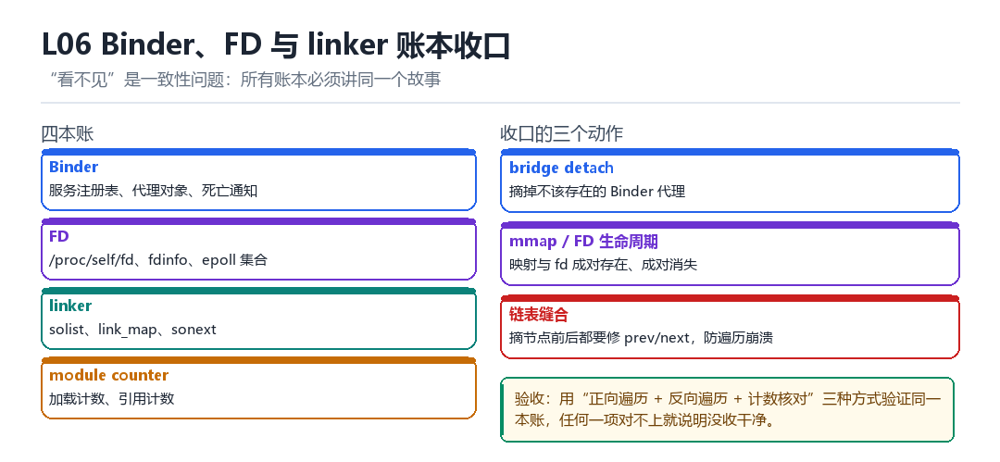

L06
Binder、FD 与 linker 账本收口
bridge detach、mmap/FD 生命周期、link_map、solist、sonext、module counter
“看不见”是一致性问题：所有账本必须讲同一个故事。
6.1 四本账

| 账本 | 内容 | 查法 |
|---|---|---|
| Binder | 服务注册表、代理对象、死亡通知 | service list / dumpsys |
| FD | fd 表、fdinfo、epoll 集合 | /proc/self/fd |
| linker | solist、link_map、sonext | dl_iterate_phdr |
| module counter | 加载计数、引用计数 | 内部状态 |
6.2 三个收口动作
- bridge detach：摘掉不该存在的 Binder 代理，并处理好死亡通知。
- mmap / FD 生命周期：映射与 fd 必须成对存在、成对消失。
- 链表缝合：摘节点前后都要修
prev/next，防止遍历崩溃。
6.3 三向验证
同一本账，用三种方式验证：正向遍历、反向遍历、计数核对。任何一项对不上，就说明没收干净。
验证脚本骨架
n1 = count_forward(solist)
n2 = count_backward(soinfo->prev)
n3 = read_module_counter()
assert n1 == n2 == n3, f'{n1} {n2} {n3}'6.10 本章自测
- 四本账分别怎么查？
- 为什么摘链表节点要同时修 prev 和 next？
- 三向验证能发现哪类问题？
- bridge detach 为什么还要处理死亡通知？
6.5 深入：为什么“摘链表”比“改字段”危险
改字段只影响“读这个字段的人”；摘链表会影响“正在遍历链表的人”。如果遍历者已经把 next 读到寄存器里，你这时候释放了下一个节点，它下一次解引用就踩空。
| 操作 | 影响范围 | 风险 |
|---|---|---|
| 改单个字段 | 读它的人 | 低 |
| 摘链表节点 | 所有遍历者 | 高（需同步） |
| 释放节点 | 所有持有引用者 | 最高 |
6.6 实战：安全摘链的顺序
- 先让“新加入”停止（阻止并发插入）。
- 等当前遍历结束（或用 RCU 的宽限期）。
- 修改
prev->next与next->prev。 - 确认遍历者已离开，再释放。
6.7 原理推演：为什么“账本一致”比“单点隐藏”更难
因为每一本账都有自己的“计数规则”。你可以让一本账看起来干净，但要同时让四本账“互相印证”，就必须理解每一条规则的细节——而这正是工程量所在。
| 账本 | 计数规则 | 容易漏的点 |
|---|---|---|
| Binder | 注册即计数 | 死亡通知 |
| FD | 打开即计数 | dup / fork 继承 |
| linker | dlopen 即计数 | 命名空间隔离 |
| module counter | 引用计数 | 并发增减 |
实务建议：写一个“对账脚本”，把四本账的关键数字打出来，改动前后各跑一次。
6.8 数据细节：三向验证的输出
对账输出示例
solist forward : 42
solist backward: 42
module counter : 42
=> OK6.9 深入：Binder 代理对象为什么难清理
因为一个 Binder 代理可能被多方持有：你的代码、系统服务、甚至别的进程。你只能清理“你自己创建的”那一份，而“别人持有的”你无从得知。
| 持有者 | 能否清理 | 说明 |
|---|---|---|
| 自己创建 | 能 | 释放引用即可 |
| 系统服务缓存 | 不能 | 只能不注册 |
| 其他进程 | 不能 | 完全不可控 |
所以“隐藏 Binder 痕迹”的正确姿势是“从一开始就不要注册”，而不是“注册了再想办法删掉”。后者几乎不可能做干净。
6.12 深入：FD 泄漏的三个典型场景
- 打开了不关：异常路径忘记 close。
- fork 继承：父进程的 fd 被复制到子进程，子进程退出才释放。
- dup 之后只关一个：引用计数没归零。
排查 fd 泄漏
ls -l /proc/self/fd | wc -l # 当前数量
# 反复执行某个操作，看数量是否单调上升
# 上升 = 泄漏6.11 实战：一份对账脚本的设计
| 检查项 | 期望 | 失败含义 |
|---|---|---|
| solist 双向计数一致 | 相等 | 链表被改坏 |
| module counter 与计数一致 | 相等 | 引用计数漏改 |
| fd 数在基线 ±10% | 是 | 有泄漏或有残留 |
| Binder 服务数与基线一致 | 相等 | 有残留注册 |